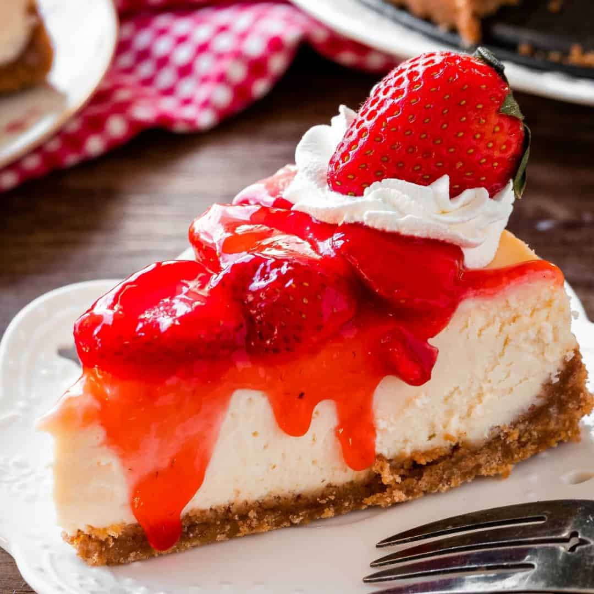

Strawberry Cheesecake

Description
A staple in the Chamberlain household, courtesy of a cheesecake magazine many years ago.
Ingredients
Crust:
- 1 ¼ cups graham cracker crumbs
- ⅓ cup butter, melted
- ¼ cup white sugar
- 2 teaspoons ground cinnamon
Filling:
- 2 (10 ounce) packages frozen sweetened sliced strawberries, thawed and drained
- 1 tablespoon cornstarch
- 3 (8 ounce) packages cream cheese, softened
- 1 (14 ounce) can sweetened condensed milk
- ¼ cup lemon juice
- ½ teaspoon vanilla extract
- 3 eggs
- 1 tablespoon water (Optional)
Directions
- Make crust: Combine graham cracker crumbs, butter, sugar, and cinnamon in a bowl; mix well.
Press onto the bottom of an ungreased 9-inch springform pan. Place in the refrigerator to chill
for 30 minutes.
- Preheat the oven to 300 degrees F (150 degrees C).
- Make filling: Place strawberries and cornstarch into a blender. Cover and puree until smooth.
- Pour strawberry sauce into a saucepan and bring to a boil over high heat. Boil and stir until
sauce is thick and shiny, about 2 minutes. Set aside 1/3 cup strawberry sauce; cool. Cover and
refrigerate remaining sauce for serving.
- Beat cream cheese in a mixing bowl with an electric mixer until light and fluffy; gradually
beat in condensed milk. Mix in lemon juice and vanilla extract, then beat in eggs on low
speed until just combined.
- Pour 1/2 of the cream cheese mixture over crust; drop 1/2 of the reserved strawberry sauce by
1/2 teaspoonfuls on cream cheese layer. Carefully spoon remaining cream cheese mixture over sauce;
drop remaining strawberry sauce by 1/2 teaspoonfuls on top. Cut through the top layer only with a
knife to swirl strawberry sauce.
- Bake in the preheated oven until the center is almost set, 45 to 50 minutes.
- Cool on a wire rack for 10 minutes. Carefully run a knife around the edge of the pan to loosen;
cool for 1 hour at room temperature. Refrigerate at least 4 hours to overnight before serving.
- Serve reserved strawberry sauce with cheesecake. If sauce is too thick, stir in water.